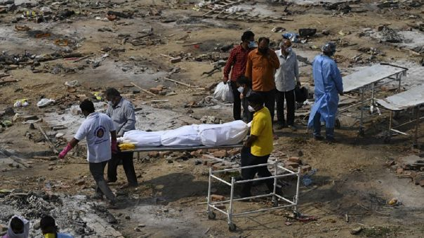

Coronavirus
Ultima noticia

La India rompió este miércoles un récord de muertes diarias por coronavirus, con 3 780, mientras los tribunales presionan a las autoridades para que actúen con más contundencia y solucionen la falta de oxígeno en los hospitales que están provocando "un acto criminal no menor a un genocidio".
La organización pro-derechos humanos Human Rights Watch (HRW) ha criticado también la respuesta del gobierno "obsesionado con las críticas y no con la carencia de productos médicos" durante la segunda ola de la pandemia, que continúa su espectacular avance en el segundo país más afectado del mundo en términos absolutos.
Además, aunque los contagios habían experimentado una ligera bajada desde que la India alcanzó por primera vez los 400 000 nuevos casos de la COVID-19 el pasado sábado, hoy el país registró 382 315 infecciones, 25 000 más que ayer, elevando el total hasta los 20,6 millones, una cifra solo superada por Estados Unidos con 32,5 millones.La India ha administrado también en las últimas 24 horas 1,4 millones de dosis contra el coronavirus, un número bajo comparado con los casi tres millones y medio de vacunas que llegó a administrar hace semanas.
Diario RPP 05/05/2021